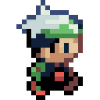

Saudações
Bem-vindo(a) à LevelUp Reviews! Somos um site que oferece análises de jogos em geral, mas com um toque poético para mostrar uma perspectiva diferente, sem abrir mão do humor, é claro.
Você já ouviu o ditado "As melhores ideias surgem na mesa de um bar"? Pois bem, o projeto LevelUp surgiu de uma forma semelhante, mas não foi em um bar — foi durante uma aula de desenvolvimento web na faculdade. Enquanto discutíamos sobre projetos, surgiu a ideia: "Por que não criar um site sobre jogos?" E assim nasceu a LevelUp, com a mesma energia criativa que fluiria em uma mesa de bar.
Aqui, você vai perceber o toque individual de cada membro do grupo. Cada review traz as perspectivas únicas de seus autores sobre os jogos, suas histórias, mecânicas e até suas inteligências artificiais. Nosso objetivo é oferecer uma visão geral e multifacetada, para que você possa descobrir novas maneiras de enxergar os jogos que já ama, ou, se ainda não os conhece, quem sabe se animar a experimentá-los. Falaremos tanto de clássicos quanto de lançamentos recentes, sempre com o intuito de enriquecer sua experiência como jogador.
Na barra de navegação acima, você encontrará nossos reviews, sugestões de jogos escolhidos pela nossa equipe, uma coletânea de memes cuidadosamente selecionados, e nossa tier list de jogos. Estamos constantemente atualizando o site, então espere por muitas novidades. Continue explorando e aproveite! Nos vemos por aí, jogador!
